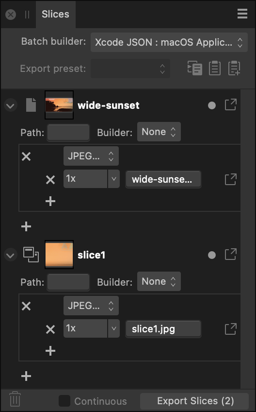

The Slices panel allows you to export defined areas of your design to universally recognized image formats.
About the Slices panel
Once an export area has been defined, the Slices panel allows you to export the area at various sizes and formats.
The panel can be populated with one or more slices. Each slice possesses a single export setup, within which multiple export formats (detailing file format and scaling options) may be stored. In turn, each export format can have multiple export sizes. This allows different graphics formats, of different sizes, to be exported from each slice simultaneously.

The Slices panel showing export areas in the document.
Options
The following options are available in the panel:
Batch builder—creates Xcode JSON batches from multiple Apple Universal or Application icon slices. For Xcode UI development only.
Export preset—presents slice presets offering common graphics formats and options for Apple app icon design.
Copy export setup to clipboard—copies a selected slice's export setup (including multiple export formats) to clipboard. If you select a graphic-specific export format within the setup, the button can be used to copy that export format to another slice's export setup.
Replace export setup from clipboard—pastes a copied slice's export setup from the clipboard to another selected 'target' slice. A copied export format can be pasted too.
Add Export format from clipboard—pastes a copied export format selected from a slice's export setup and adds it to another slice's export setup. You can copy (and replace) an export format from Panel Preferences.
Delete—removes the panel item and corresponding export area from the page. The Page panel item cannot be deleted.
Continuous—when selected, slices are re-exported automatically if the content within the slices is modified. This option becomes available once Export Slices (n) has been clicked and an export folder selected.
Export Slices (n)—exports all checked panel items.
Export Setup Options
The following options are available in the export setup for each slice entry:
Page—indicates that the export area is the entire page.
Slice—indicates an export area drawn with the Slice Tool.
Slice (from item)—indicates an export area created from a layer, group or object.
Thumbnail—visually indicates the area to be exported.
Filename—displays the name for the export area. Type directly in the text box to set your own file name. If a name has not been set, unique names are suggested.
Active/Inactive—when enabled, the area is exported when Export Slices (n) is clicked at the bottom of the panel.
Export—exports the area represented by the panel item.
Path—defines the folder name for the exported slices. The following tokens are available:
Document name—the exported slices will be stored in a folder carrying the name of the document without the app’s extension.
Document file name—the exported slices will be stored in a folder carrying the name of the document file with the app’s extension.
Slice name—the exported slices will be stored in a folder carrying the slice name.
Slice Properties—allow you to configure additional settings for the exported slices, including output filename and custom DPI. The following additional tokens are available:
Scale—scale multiplier (if specified, else defaults to 1).
Scale suffix—Scale suffix in the form ‘@2x’ (not including 1x scale).
Width—the width of the exported slice (if specified).
Height—the height of the exported slice (if specified).
Square size—square size of the exported slice (if specified).
Builder—generates supplementary Xcode JSON files along with the exported slices for Apple icons. For Xcode UI development only.
When using tokens to specify your slice's export options, you may set up the following: "Document name (Slice name)". Apart from using brackets, you can also separate tokens with underscores, hyphens and/or other characters.
Export Format Options
You can store multiple formats within every slice's export setup. The following options are available for each format:
File format—select a file format to be exported from the pop-up menu.
Size scaling—select scaling options (e.g., 1x, 2x, etc.) to set for the export format.
Additional properties—lets you choose a custom DPI and a path and filename made up of defined tokens or custom user variables.
Export—exports the slice using this export format.
 Copy export setup to clipboard—copies a selected slice's export setup (including multiple export formats) to clipboard. If you select a graphic-specific export format within the setup, the button can be used to copy that export format to another slice's export setup.
Copy export setup to clipboard—copies a selected slice's export setup (including multiple export formats) to clipboard. If you select a graphic-specific export format within the setup, the button can be used to copy that export format to another slice's export setup. Replace export setup from clipboard—pastes a copied slice's export setup from the clipboard to another selected 'target' slice. A copied export format can be pasted too.
Replace export setup from clipboard—pastes a copied slice's export setup from the clipboard to another selected 'target' slice. A copied export format can be pasted too. Add Export format from clipboard—pastes a copied export format selected from a slice's export setup and adds it to another slice's export setup. You can copy (and replace) an export format from Panel Preferences.
Add Export format from clipboard—pastes a copied export format selected from a slice's export setup and adds it to another slice's export setup. You can copy (and replace) an export format from Panel Preferences. Delete—removes the panel item and corresponding export area from the page. The Page panel item cannot be deleted.
Delete—removes the panel item and corresponding export area from the page. The Page panel item cannot be deleted.